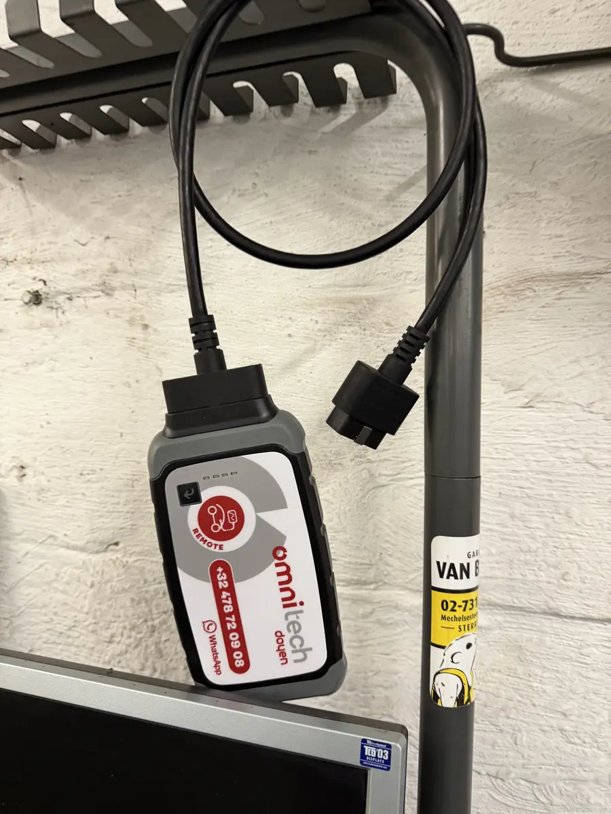

Votre voiture a besoin d'un entretien? Un voyant s'allume sur le tableau de bord? Chez DMT AUTOGROUP sur la Mechelsesteenweg à Zaventem, on diagnostique le problème et on le règle — rapidement, honnêtement, sans surprise sur la facture. 15 ans d'expérience, toutes marques confondues. Heeft uw auto onderhoud nodig? Brandt er een waarschuwingslampje op het dashboard? Bij DMT AUTOGROUP op de Mechelsesteenweg in Zaventem diagnosticeren we het probleem en lossen we het op — snel, eerlijk, zonder verrassingen op de factuur. 15 jaar ervaring, alle merken.
Un entretien régulier, c'est ce qui fait la différence entre une voiture qui roule 10 ans et une qui vous lâche sur le Ring de Zaventem un lundi matin. Chez DMT AUTOGROUP, on fait l'entretien complet selon les recommandations du constructeur : vidange, filtres, courroies, bougies, liquides — tout est vérifié. Que vous rouliez en diesel ou en essence, que votre voiture ait 20 000 ou 200 000 km, on adapte l'entretien à votre situation. Regelmatig onderhoud maakt het verschil tussen een auto die 10 jaar meegaat en eentje die u in de steek laat op de Ring van Zaventem op maandagochtend. Bij DMT AUTOGROUP doen we een volledig onderhoud volgens de aanbevelingen van de fabrikant: olieverversing, filters, riemen, bougies, vloeistoffen — alles wordt gecontroleerd.

Un voyant moteur allumé, c'est stressant. Mais dans 90% des cas, c'est un capteur ou un petit problème qu'on règle en moins d'une heure. Notre garage à Zaventem est équipé d'outils de diagnostic professionnel Launch et Omnitech qui lisent tous les calculateurs de votre véhicule. On trouve la panne, on vous explique ce qu'il en est, et on répare. Pas de devinettes, pas de pièces changées pour rien. Een motorlampje dat brandt is stresserend. Maar in 90% van de gevallen is het een sensor of een klein probleem dat we in minder dan een uur oplossen. Onze garage in Zaventem is uitgerust met professionele diagnosetools van Launch en Omnitech die alle computers van uw voertuig uitlezen.


Les freins, c'est pas un truc qu'on reporte. Si vos freins grincent, vibrent ou que la pédale est molle, passez chez nous à Zaventem. On remplace les plaquettes, les disques, les étriers — on utilise des pièces de qualité comme Brembo. Si votre véhicule a aussi subi des dégâts de carrosserie suite à un accrochage, on s'en occupe en même temps. Pour les habitants de Diegem, Sterrebeek et Kraainem, on est à 5 minutes. Pas besoin de prendre rendez-vous trois semaines à l'avance. Remmen zijn niet iets dat je uitstelt. Als uw remmen piepen, trillen of het pedaal zacht aanvoelt, kom langs bij ons in Zaventem. We vervangen remblokken, schijven, remklauwen — we gebruiken kwaliteitsonderdelen zoals Brembo. Heeft uw voertuig ook carrosserieschade na een aanrijding? Dan pakken we dat tegelijk aan.

L'embrayage patine? La boîte de vitesses craque quand vous passez les rapports? C'est exactement le genre de travaux qu'on fait tous les jours dans notre atelier de mécanique à Zaventem. On démonte, on diagnostique, on remplace ce qu'il faut. Boîte manuelle ou automatique, on gère les deux. Si vous venez de Woluwe ou de Machelen, on est facilement accessible par la Mechelsesteenweg. Slipt de koppeling? Kraakt de versnellingsbak bij het schakelen? Dat is precies het soort werk dat we elke dag doen in ons mechanisch atelier in Zaventem. Manuele of automatische versnellingsbak, we behandelen beide.

Le voyant ABS reste allumé? C'est souvent un capteur de roue ou le module ABS lui-même. Dans notre garage à Zaventem, on diagnostique le problème avec nos outils informatiques et on remplace uniquement ce qui est défectueux. L'ABS, c'est votre sécurité — surtout en hiver quand les routes de Zaventem sont glissantes. Blijft het ABS-lampje branden? Meestal is het een wielsensor of de ABS-module zelf. In onze garage in Zaventem diagnosticeren we het probleem met onze computertools en vervangen we alleen wat defect is.
Problème de démarrage? Vitres électriques qui ne marchent plus? Batterie à plat? On gère tout ce qui est électrique et électronique dans votre voiture. Remplacement de batterie, diagnostic du circuit de charge, réparation de faisceaux — notre garage à Zaventem a le matériel pour traiter les pannes électriques de toutes marques. Startproblemen? Elektrische ramen die niet meer werken? Lege batterij? We behandelen alles wat elektrisch en elektronisch is in uw auto. Batterijvervanging, diagnose van het laadcircuit, reparatie van kabelbomen.
Du simple réglage au remplacement complet, notre atelier mécanique gère tous les travaux moteur. Perte de puissance, consommation excessive, fumée à l'échappement — on trouve la cause et on répare. On travaille autant sur les petits moteurs essence que sur les gros diesels, toutes marques confondues. Van eenvoudige afstelling tot volledige vervanging, ons mechanisch atelier behandelt alle motorwerken. Vermogensverlies, overmatig verbruik, rook uit de uitlaat — we vinden de oorzaak en herstellen.
Votre contrôle technique approche? Passez d'abord chez DMT AUTOGROUP à Zaventem. On fait un pré-contrôle complet : freins, éclairage, émissions, suspension, direction — tout ce que le centre de contrôle va vérifier. Si quelque chose ne passe pas, on le répare avant que vous y alliez. Résultat : vous passez du premier coup et vous évitez la contre-visite. Technische keuring binnenkort? Kom eerst langs bij DMT AUTOGROUP in Zaventem. We doen een volledige voorcontrole: remmen, verlichting, uitstoot, ophanging, stuurinrichting — alles wat het keuringscentrum controleert.
Lundi — Vendredi · 08:30 — 18:00
Mechelsesteenweg 270, 1933 Zaventem
Maandag — Vrijdag · 08:30 — 18:00
Mechelsesteenweg 270, 1933 Zaventem